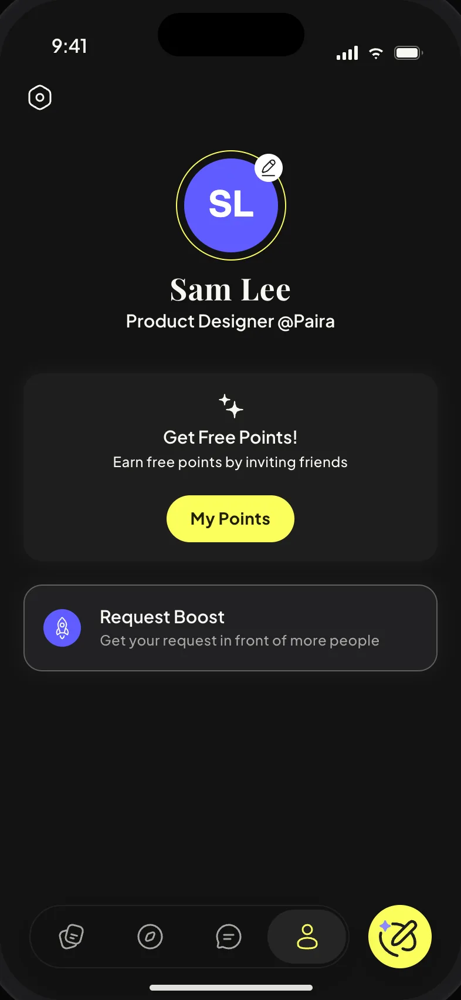
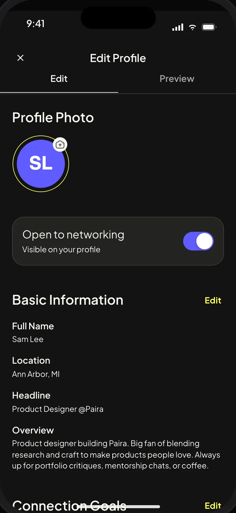
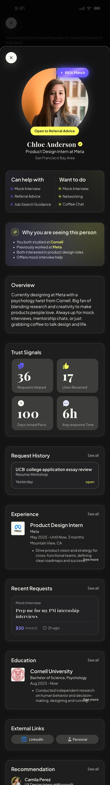
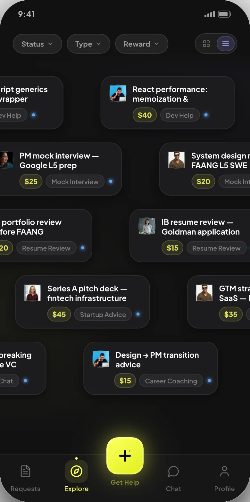
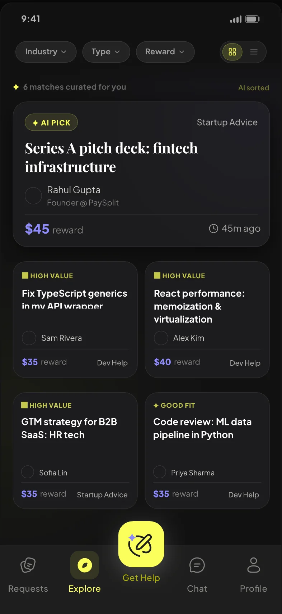
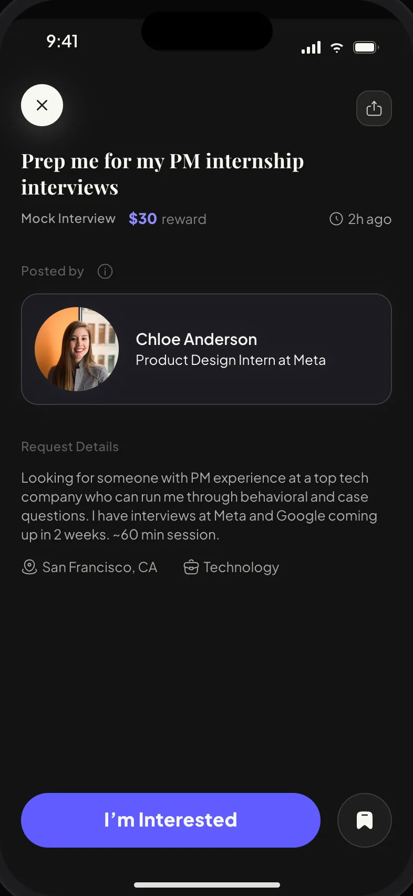
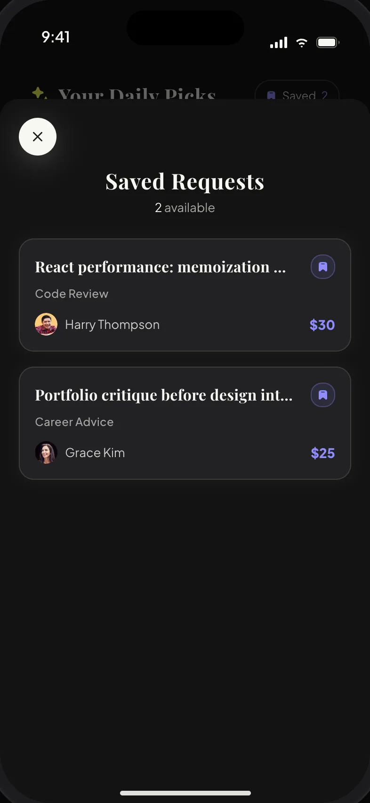

Browsing people stalled.
- Swiping had friction. Each card demanded a decision right away, and that pressure made people quit instead of choose.
- Everyone wanted to know more. In a job search, a headline is not enough to say yes or no to a person.
New Where: between the four cards and the cover image. Six nodes; the last is the present, so the line reads as ongoing. Confirm Dec 2025 (1.0 beta) and Apr 2026 (2.0 beta).
Edit Where: replaces the current four-bullet list after the Pivot lede. Nothing removed: your four points become the evidence under three headings, and the second heading is the good news. Method note rewritten to be direct: think-aloud sessions, six or more users, same tasks.
The evidence came from one-on-one think-aloud sessions with six or more potential users, each given the same set of tasks, designed and run by the design team. We brought the findings to the whole team and shaped the new direction together.
Edit Same screens, shorter copy. The first paragraph states the three constraints and what each one decided; the second says what the design gave us. Trust signals are described where they appear on the long profile.
Three constraints shaped the profile. A phone screen is small, so only what helps a decision goes above the fold. A mentee decides in seconds, so the profile leads with what you can help with, what you want to do, and the reason you were suggested. And the decision is about trust, so the numbers a mentee checks sit right under the headline: requests helped, likes received, days on Paira, response time, then recommendations from people you actually helped.
What that gave us. Experience and education are still there, lower down, and the editor breaks them into small steps so nobody stalls on a blank form. “Open to” switches say what you offer, so nobody asks for what you did not. Points, Request Boost, and settings live here too, because this is where a person decides how much of themselves to put in. The profile is never demanded up front; the app asks for it when it starts to matter, which is what lets onboarding stay short without losing match quality.



Edit Below is Reflection as it is now. The strip sits inside “A cleaner path from design to code”, under its sentence, as a small row of pills: outlined = steps you set up, violet = AI does the work. Nothing else changes. Confirm the first three steps (Meeting → AI notes → Ticket) are part of your team’s routine.
Edit Full preview of 4.2. Order: what Explore is and why the limits are deliberate (two columns, badges) → the three concepts with your reasoning and the six-mentor test → the shipped screens with “What changed”. The four phones are the same as today; only their position moves down.
Explore is where a helper finds something to do. Each day it shows a handful of open requests matched to you, with a badge on each that says why it is there. You can save a pick, pull to refresh, and when the day’s picks run out, the screen tells you when the next batch arrives. Tap a pick to read it; “I’m Interested” moves it into your Request Hub.
The question we kept testing was how to show requests to a helper. A feed that never ends makes helping feel like a debt. A short list that ends makes it feel like a favor you can finish today, so helpers come back. And a reason on each card is easier to trust than a score. Three iterations got us there.




Iterations 1 and 2First a stream of requests drifting across the screen, then one large AI pick above a grid of small cards. In usability tests the stream packed in a lot but demanded fast reading and felt like pressure to respond; in the grid the small cards were hard to read, and the big card got attention the others did not. We kept the stream for a later release, and decided that until premium launches, every request gets the same chance to be seen.
Iteration 3 · ShippedA bounded daily set of equal cards, each with a match-reason badge, save for later, and a clear end state. Validated in one-on-one think-aloud sessions with six mentors on the same task set: the bounded list read as finishable, and an explicit reason outperformed a match score.
What changed. From a swipe deck of bounties to a short list you read, save, and come back to, where every card is something you can act on today, and every request gets an equal chance.